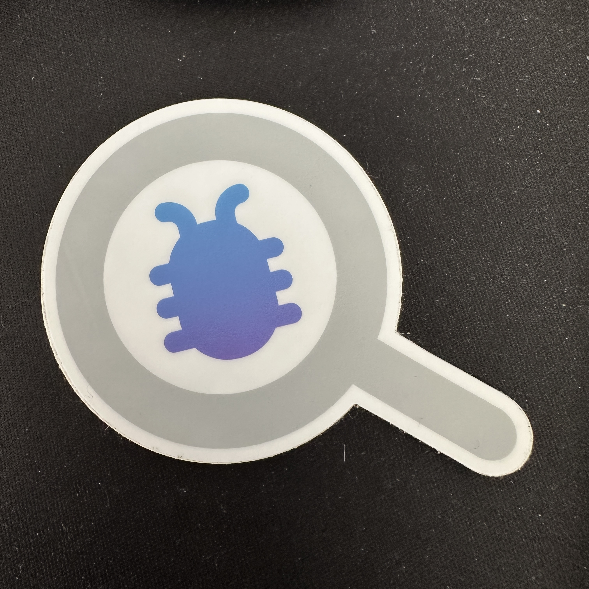

Merchant Bug Tracker
An internal Shopify product for tracking merchant-reported defects to resolution. Three engineers and I built it from the ground up in four months.
Read the case study
Problem
Every month, support escalated hundreds of validated merchant defects. Over half went to the wrong team's GitHub repo (there were more than 12,000), and few of the rest were resolved on time.
Solution
We did more research on the workflows and jobs to be done on both sides: support, who report bugs, and R&D, who fix them. We wrote a tech design, circulated it for feedback, built a one-sprint prototype to learn from and then threw it away. Then we built and shipped the real thing within a month.
Impact
Support got a clear UI for reporting bugs. Automation routed each one to the right team and opened a matching GitHub issue. R&D got notifications and SLAs, and leadership got complete, accurate quality data. Resolution within SLA rose above 80%.